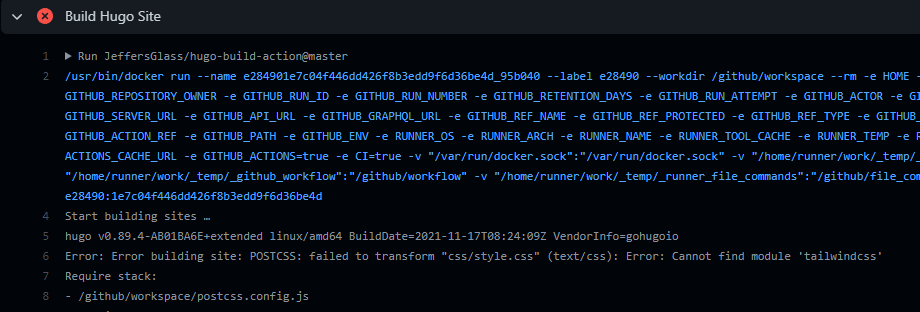
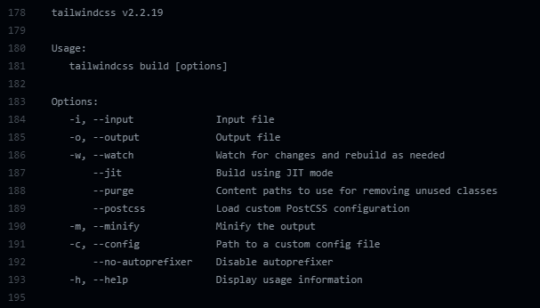

Dockerfiles
I'm setting out to rectify a pretty silly part of my workflow. Namely, when I want to push new content to the site that I've built with hugo, I:
- Clean my current hugo build locally (removing /public, /resources/ and /dist). Slightly unnecessary, but has cleared some issues in the past.
- Rebuild all files using
npx hugo - Add all files to git using
git add -A - Commit the new files using
git commit -m "Commit Message Here"
This pushes the new files to github, which triggers a github action to upload the files in the ./public folder to s3.
There must be a better way.
And I'm confident there is - I'd love to use some like Jake Jarvis' Hugo Build Action to automatically rebuild the site whenever new code is pushed to Github or merged into the main branch. The issue is, the Docker image that Jarvis has used doesn't happen to include tailwind as part of its build. So, I think the way forward is for me to learn enough about docker and dockerfiles to add Tailwind to a fork of Jarvis' action, and use that to build my site.
The dockerfile for this action is remarkably short:
|
|
From what I understand, this is using a pre-built docker image stored online (via Github?) to improve the speed of this action. That seems like quite a deep rabbit hole to go down, though an interesting one, but let's see if there's a faster way.
One thing that occurs to me is to see if anyone else has forked this repo, to make their own changes in the way I'm interesed in. And indeed, I'm the 10th person to fork this action, and several of them are X commits ahead of the original (as well as being several behind), meaning they've made some tweaks and changes. Let's look at one of these commits from willbicks
ruby \
${HUGO_EXTENDED:+libc6-compat libstdc++} && \
update-ca-certificates && \
+ npm install --global postcss-cli autoprefixer @babel/core @babel/cli && \
- npm install --global postcss postcss-cli autoprefixer @babel/core @babel/cli && \
pip3 install --upgrade Pygments==2.* && \
gem install asciidoctor && \
wget https://github.com/gohugoio/hugo/releases/download/v${HUGO_VERSION}/hugo_${HUGO_EXTENDED:+extended_}${HUGO_VERSION}_Linux-64bit.tar.gz && \Hang on, that's alredy way longer than the Dockerfile in my fork! But it also looks like something I could actually modify...ah, it looks like back in commit #0aeee38, Jarvis switched from using a fully-written-out dockerfile to a version which is hosted as one of these prebuilt images. Let's see if we can put that old, fully-written-out docker file into use with the most recent version of hugo.
I'll start by copy-pasting the last longhand version of the Dockerfile that Jarvis wrote. Then I'll update the Hugo version to 0.89.4 (the latest at time of writing), and add "tailwindcss" to the npm command the Dockerfile runs. Finally, I'll change the action.yml file to point to the local Dockerfile, instead of the prebuilt image. Finally, I'll commit all the changes to git and push them back upstream to Github.
I'll create a new workflow for this instead of blowing away my old one (that just manually published a folder to s3), called hugoBuildAndUpload.yml. I'll also disable the previous action on Github, so it doesn't try to run when the new action uploads. Having saved that new yaml file, I'll push it to Github and see what happens...
Drat, not quite. Hugo seems to be running, but it still can't find tailwind, even though it should be installed via NPM now... perhaps my install order is wrong? By adding require('tailwindcss/nesting') to my postcss requirements and re-pushing, I can see that Hugo/postcss are indeed attempting to build the site, but aren't able to find the required tailwind dependencies. This time the error is: Error: Error building site: POSTCSS: failed to transform "css/style.css" (text/css): Error: Cannot find module 'tailwindcss/nesting'
Let's see if tailwind isn't installing successfully, or if postcss can't find it for some reason. I'll add a line to the Dockerfile which should just run the -help command for tailwind on the command line, and error out if it breaks:
|
|
And indeed, in the action's output I can see the full help info from tailwindcss. A bit verbose perhaps, but I can at least see that tailwind is being installed successfully via npm
On a whim, and after some internet cruising, I ran across a post on the Hugo forums where a user was similarly having issues with Hugo not recognizing that tailwind was installed. The user had identified that the NODE_PATH was being set to a Yarn installation folder, and that changing it to an NPM path solved the issue. While that was related to a local build, I wondered if perhaps the Dockerfile installing yarn was screwing up my pathing? Unfortunately, removing the yarn install didn't fix the issue. There were some references from a couple years ago to similar services having issues with node modules when installed globally, but removing the --global flag from the npm install step didn't fix anything
Some other things that didn't work:
- Trying to install via
npm install package.jsonwith various versions of--save,--save-dev,--globaletc - Trying to install by specifying packages, and using
--devand--save-dev - Moving the tailwindcss install to after the postcss install in the RUN npm install line of the docker file
It seems I will indeed need to dive deeper into docker to understand what's going on. I'll install Docker Desktop for Windows and see about loading up this Dockerfile. I'm hoping it's something small, like a path being off or a module being in one folder and not another, but we shall see...
Docker
The install process was painless, just download and run an exe. It wanted me to walk through a tutorial, but there will be plenty of time to learn how to craft my own image from scratch later - right now I really want to know how to run a preexsiting dockerfile. Thankfully, a post from Toradex pointed me the right direction - just using docker build . in the directory where a dockerfile is is sufficient to build it for use. I'll revert the npm installation text back to what it was for now.
Using Get-Content Dockerfile | docker build - -t hugodebug we can use a local Dockerfile for building a new image with the kernel specified in our Dockerfile, with the name hugodebug. Where exactly this image goes I'm not sure, but Docker Desktop sure spots it and lets me open it up. I'll give it a name and access to ports 80:80 as well. (Turns out, opening a port was both unneccesary and caused Docker to throw up. So scratch that.)
It does seem that the container is happy to open in docker desktop, once I eliminated the port mapping (which was unnecessary) but it's closing right away. Which makes some sense - the "entrypoint" (which I gather is the singular command to run) is hugo, which terminates. I'll change that to sh to drop into a shell, which keeps the container running.
Alright, we're in! And I can test commands against this command line to see what did and didn't install correctly. Come to think of it, in theory I could deploy this as its own image online... but one step at a time. Let's figure out how to get our website source in here.
Curiously, I happened to switch to a differnt development machine at this point and... the container just would not stay running, with the same Dockerfile? Or rather, it will stay running when run from the docker desktop UI but not via Powershell. Which makes me think I'm just running the wrong command. Hmmm.
I gather from a video from Fireship.io that perhaps the thing to do is to put the Dockerfile right in my development environment, and mount the local source directly to it using the COPY command. So let's try that! According to the Dockerfile Reference, we can use the copy directive, simply with copy . . to copy the files in the current directory to the image home directory. But since there are some files (like our local node_modules folder, the /public build folder, github workflows etc), we'll add them to a .dockerignore file.
And that's where I hit a bit of wall, since, according to a post on the Docker forums, Windows 10 Home is incapable of running docker desktop. A brief pause here while I switch back to the other machine...
Oh, the other machine is also Windows 10 home. Well dang. Perhaps this is a dead end.
But wait, there's an official post from Docker in March of 2020 saying that Docker should for work Windows 10 home users above build 19040 (I'm on 19042). So what the heck?
Gosh this post is going to be a mess. I've just noticed that the one open issue on the original hugo-site-build action references pretty much exactly the issue I'm having! In the words of moritzheiber:
postcss, postcss-cli and autoprefixer are globally installed modules. Unfortunately, if the theme has a "local" postcss.config.js (e.g. like the docsy theme) npm fails to resolve the global module path and therefore thinks the autoprefixer module is missing.
There are further refernces to some references and examples listed in that issue as well